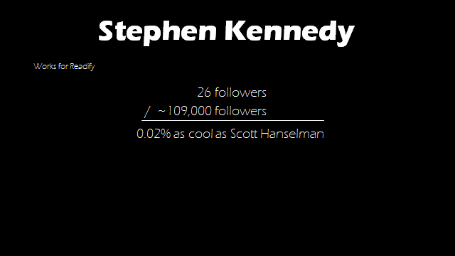
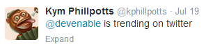

Reflections on Presenting at DDD Melbourne
On Saturday, I presented at DDD Melbourne with a topic entitled 'Why All of the Cool Kids Are Talking Xamarin', and well things didn't quite go to plan, not train wreck bad, but certainly not as well as I would have hoped. But, before I get started, I just want to state one thing - this is not an apology, I'm blogging about this as a point of reference for future improvements to the way I present and to possibly give tips to someone else who may be presenting in the future.
Slides can be found here - https://speakerdeck.com/devenable/why-all-of-the-cool-kids-are-talking-xamarin
Previous to DDD Melbourne I'd never even presented at a user group meeting let alone at a local event. I'd done a lot of presentations but these were to either client organizations or the organizations I was working for. Various people (none of them my mother I should add) had told me that I was very good at presenting and I was feeling pretty confident. I'd put a tonne of effort into my presentation and was feeling good about it.
Here is what went wrong:
- I forgot that I had recently installed the Windows Store Twitter app and left notifications on in the background - SPAM
- I didn't ensure that I had network connectivity before I started my talk, and after plugging in the network cable (in the middle of the presentation) I didn't have time to check that I had connectivity to Azure on my Android emulation image that was running.
- I let the above and a number of other smaller factors get to me when they really shouldn't have.
What I learned from the experience
Don't start your presentation until you are in the right state of mind
The previous speaker went over time, particularly with people asking him questions, and I certainly bare him no animosity, he was apologetic and gracious. On top of that the event wanted to record my session which involved installing Camtasia that they had on a USB key so I didn't do a proper tech-check, like ensuring I'd plugged my laptop into the network.
I knew my presentation was already likely to run over time so I just launched straight into it despite the fact I wasn't feeling particularly 'in the zone'.
What I should have done is taken a moment to re-centre myself, perhaps briefly chatting with a few people before launching into it. It is better to have a slightly presentation glossing over a few things, than delivering something with a lack of clarity.
If you are bad at remembering things don't be afraid to have alot of slides
I have the memory of a goldfish, it is really terrible. I can't even remember the names of variables, properties, or classes most of the time unless they are on the screen when I am coding.
Previously, for all my other talks I'd compensate for this by having a lot of slides that I could almost literally read. With say a single line bullet point covering a paragraph or so worth of content. The trick with this is to have a lot of slides with interesting content such as pictures breaking them up to keep people engaged. I am not saying that you should use slides with walls of text, or just a huge litany of bullet points throughout your presentation.
I don't know why, but for this talk I decided that I didn't want a lot of slides, or at least stuff I could almost read off. I think my problem was that I was trying to emulate other presenters who obviously have better memories than me. I will remain forever jealous of people who can just look at a single slide and talk about it for 10 minutes seamlessly.
I practiced my talk alot, like almost every night for two weeks straight. I had it down to around 48 minutes (I'd been given 45 minutes), my talk ended up running for 40 minutes even with a few minutes delay due to tech demo issues, because I'd forgotten (or my brain was so frozen) a lot of what I wanted to talk about. For reference in a previous 15 minute presentation I'd used 22 slides, for this 45 minute presentation I used 26, and a large chunk of those had no talking trigger points associated with them.
I know I could use presenter notes, but I really don't like looking like I am squinting down at something in the middle of a talk, but that is certainly a valid alternative.
Setting expectations is important
As a software developer setting expectations is one of the most important things you can do, and it is for presentations as well.
One of the themes I really wanted to run with was that Xamarin is a very approachable product to run with and use. To that end I decided to try and come off as an expert as much as possible throughout my talk and then at the end admit that before working on this talk I'd only done a single proof of concept with it. Thus, showcasing how approachable it is, and despite needing to pick up an understand of the iOS and Android ecosystems any competent .Net developer can do it. But I think this ended up creating undue stress on myself during the talk as I was paranoid about making a mistake that would make me look like anything less than an expert.
Know what your style is, and stick to it
This I think that this is the biggest mistake I made at DDD. I wanted to come up with a polished professional presentation. But really, that is not my style. I tend to invoke my twisted sense of humour into my presentations, and aside from a couple of slides I stuck to the clean and narrow.
There were two reasons why I tried to be professional:
- I had an awful lot of content to go through and didn't feel that I had the time for it
- I didn't want to risk even slightly offending or upsetting anyone. I will freely admit that sometimes I can push the line of acceptable, not veering off like Maven is my Girlfriend acceptable, but I was so paranoid about even slightly tweaking someones nose I pretty much left out any of my usual banter.
And why was this so bad? For the first 20 or so minutes of the presentation I basically had no reaction from the audience. During the talk, at the back of my mind I was thinking to myself that the talk wasn't going well. In hindsight I realized that it wasn't the audience's fault, they were a great audience. The problem was I'd given them nothing to react to! I was so used to feedback from my audiences that to have nothing felt like a criticism of my talk.
The most important person to feel comfortable in a presentation is the presenter, some people like feedback and audience participation during a presentation and I am definitely one of them. For reference to my sense of humour here is one of my slides from the presentation where the only person who is likely to be offended is myself. (Context: The number of Twitter followers Scott Hanselman and I had at the time)

Showing more than 2-3 files in a code demo is a bad idea
This is one of my pet peeves with presentations and I have no idea why I fell into the same trap. After two or three files the audience tends to get lost in what you are showing. It needs to be clear, succinct, and to the point.
The code for the demo I was trying to show for those interested can be found here. I didn't show everything, I talked about the Azure Mobile Service in the slides, but I had about 6 files I was trying to talk people through, and it went OK when I was practicing at home but I don't think people got a lot of value when it was actually showcased. On top of that I got a bit flustered when the demo didn't work due to network connectivity issues and ended up skipping over a bunch of stuff.
What I should have done is stuck as much to PowerPoint showing a class or two and explaining the structure clearly through diagrams.
Your brain doesn't work properly during a presentation
This obviously depends on the individual and how nervous / stressed they are, but I saw a number of presenters make all sorts of small mistakes they wouldn't of made (given that I'd worked with some of them) if they were in a relaxed state. A very quick and simple fix to the Twitter problem given it is a Windows 8 Store application would of been just to uninstall it. (Or how to turn off the notification settings as I was advised afterwards) Obviously it shouldn't have been on in the first place, but I'd never thought of that particular application running in the background. If I was at home or the office it would have been a 5 second fix.

I managed to salvage it slightly by stating it was free promotional activity for people who followed me, so there is that :).
Dealing with problem slides
Sometimes there is a slide or two you just can't nail. I had two slides near the end of the presentation that I just couldn't get to come out right despite the important message I was trying to deliver. I only came up with this idea just before going to bed, and it seems like such utter common sense, but I loaded up Word and sat down and wrote exactly what I wanted to say allowing me to tweak and modify the words until it was in a state that I was happy with. I printed out the document and tried to memorize it. If I'd done it earlier, or skipped some of the presentations so that I could practice it, it would have gone much better (I ended up whipping it out and using it as a reference note at the end of my talk) but I will certainly be saving that trick for the future.
The more positive things I learned
The audience wants you to succeed
Unless you're performing at a comedy club no one is likely to actually heckle you. Both you and your audience want the same outcome, a really awesome presentation. My audience at DDD were fantastic.
The development community is awesome
For my talk I reached out to Scott Hanselman (@shanselman) and asked him to talk about his startup myEcho he produced an awesome 5 minute video for me that not only went down really well with the audience but gave me some time in the middle of the presentation to reset myself. I also asked Paul Betts (@paulcbetts) to talk about his experiences in open source software development with Xamarin in a set of questions over email and he gave some really insightful answers.
I'd like to thank both of them publicly for what they did for me, particularly as Scott has probably already blacklisted my email address due to all of the other thank you's I've already sent.
The DDD Melbourne event once again was a fantastic event clearly all of the organizers, sponsors, speakers, volunteers, and participants at DDD Melbourne made the event what it is. I'd like to thank all of them, as well as the people that went to and voted for my talk and I hope to be back next year.